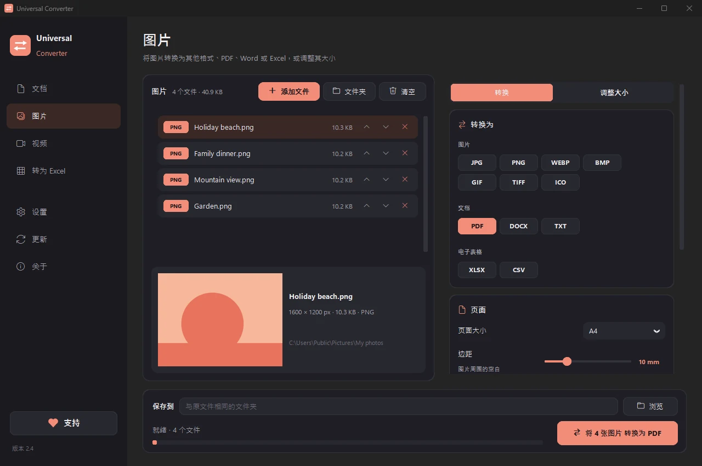
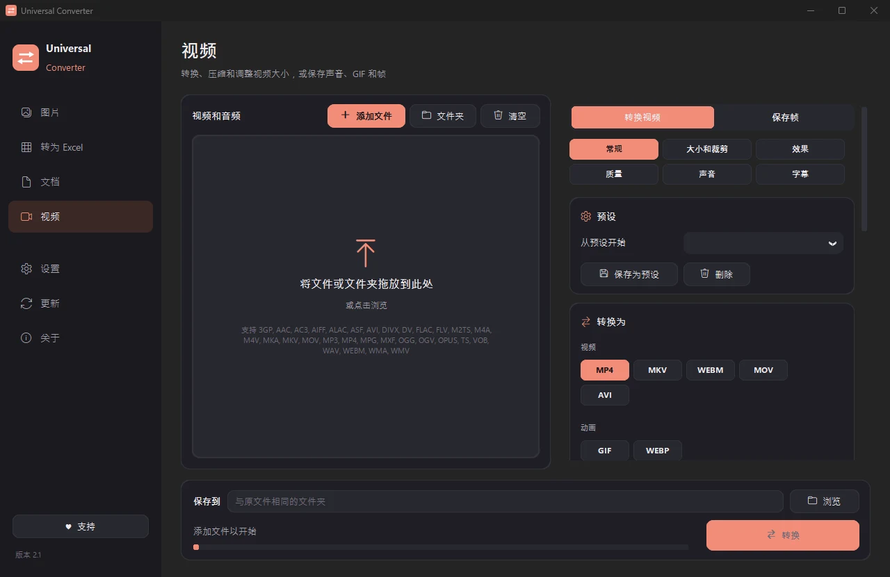
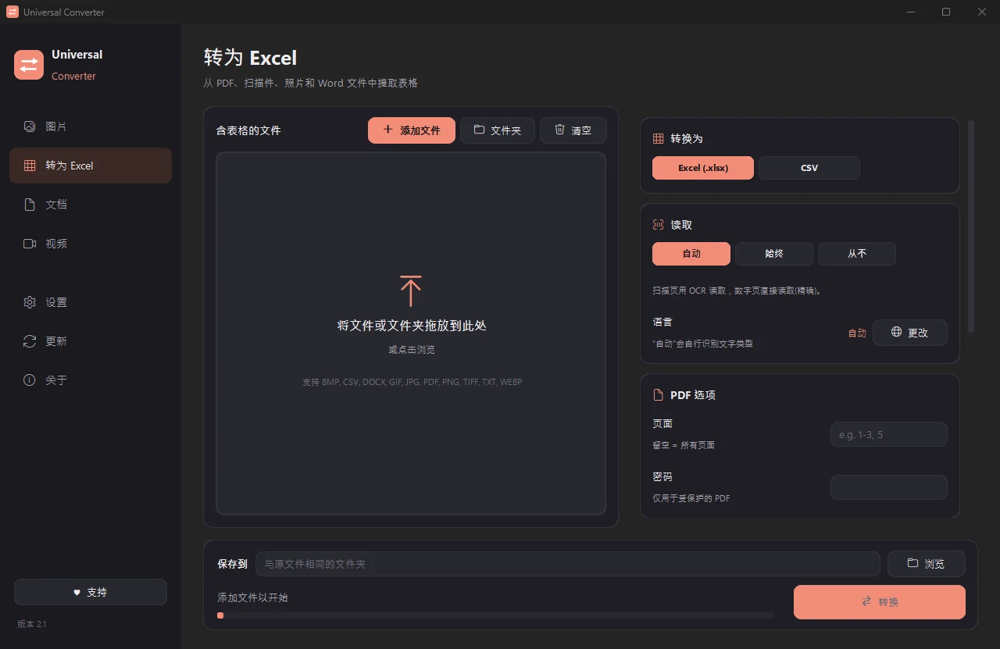
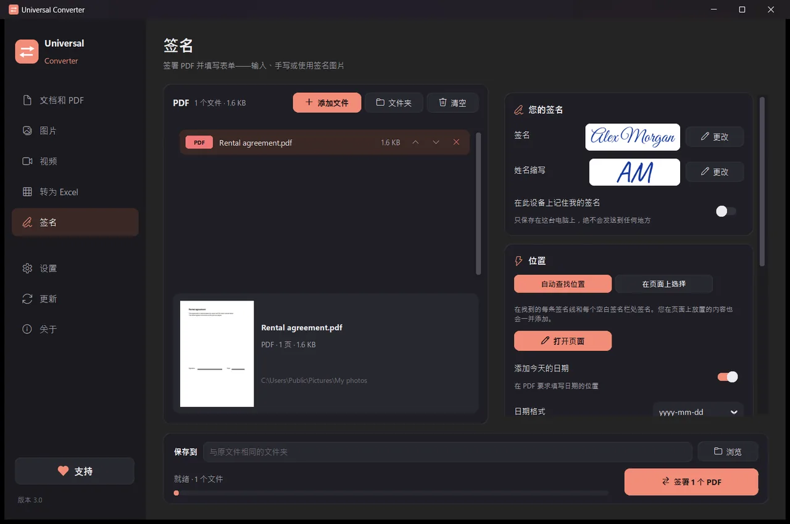

在自己的设备上转换文件
图片、文档、视频和音频、PDF 以及表格转 Excel，全部集中在一个应用里。不上传任何内容：你的文件始终留在你的设备上。
如何安装和更新
- 打开下载的 .dmg，将 Universal Converter 拖到“应用程序”。
- 打开应用。首次打开时，macOS 会因为它未经 Apple 签名而阻止：点按“完成”。
- 打开“系统设置”>“隐私与安全性”，向下滚动，点按“仍要打开”并输入密码。只需操作一次。
更新：如果您在首次打开时允许，应用每次启动都会检查新版本，验证其数字签名，并在您选择时安装。
如何安装和更新
- 在手机上点按“下载 Android 版”。
- 打开下载的文件。如果 Android 提示，请允许浏览器或文件管理器安装应用。
- 点按“安装”。
更新：应用大约每天检查一次，有新版本时会通知您。用同样的方式下载并覆盖安装旧版本，您的设置会保留。

私密
所有处理都在你的设备上完成。无需上传，无需排队，没有大小限制。
免费
免费使用，没有广告，无需账号，不加水印。
18 种语言
中文、英语、希腊语、西班牙语、意大利语、德语、法语、葡萄牙语、波兰语、俄语、阿拉伯语、希伯来语、日语、韩语、泰米尔语、南非荷兰语、约鲁巴语和豪萨语。
一个窗口，五种工具

文档和 PDF
在 PDF、Word、ODT、RTF、TXT、Markdown、HTML、EPUB、PowerPoint 和 Excel 之间转换。把页面转成图片，把多个文件合并成一个 PDF。保留字体、字号和颜色。 将 PDF 缩小到您选择的大小。
图片
在 JPG、PNG、WEBP、TIFF、BMP、GIF 和 ICO 之间转换。按像素、百分比或文件大小调整尺寸，把图片合并成 PDF 或 Word 文件，并识别图片中的文字（OCR）。 也可以添加 PDF：每一页都会成为一张图片。

视频
用 AV1、H.265、H.264 或 VP9 在 MP4、MKV、WebM、MOV 和 AVI 之间转换并压缩视频。剪辑、裁剪、旋转和调整尺寸，制作 GIF，把画面保存为图片，或只保留声音为 MP3、M4A、FLAC、WAV、OGG 或 Opus。Android 版：H.264 或 H.265 的 MP4 或 MKV，可剪辑、裁剪、旋转、调整尺寸、保存帧，或把声音保存为 M4A。

转为 Excel
把 PDF、扫描件和照片中的表格提取到 Excel 或 CSV：银行流水、发票、价目表。支持中文、英语、希腊语等 30 多种语言。

签名
签署 PDF 并填写表单。用手写风格输入姓名、手写签名或使用签名照片。应用会自动找到签名线，也可以点击签名、姓名缩写、日期、文字或勾选标记应放置的位置。可一次签署多个文件；原文件保持不变。
- 条件允许时用显卡处理视频：通常快 5 到 20 倍。
- 直接拖入整个文件夹：所有文件一次转换完成。
- 文件应放在其他选项卡时会提示您，并一键移过去。
- 有新版本时会通知你；在 Windows 和 Mac 上可以为你安装，并经过数字验证。
- 浅色和深色外观，跟随你的设备设置。
使用方法
- 打开 Universal Converter，在左侧选择文档和 PDF · 图片 · 视频 · 转为 Excel · 签名。
- 把文件或整个文件夹拖入窗口，或点击“添加文件”。
- 点击“转换”。新文件会保存在原文件旁边，或保存到你选择的文件夹。
能做什么
常见问题
真的免费吗？
是的。Universal Converter 免费使用，没有广告，无需账号，也没有时间限制。如果它对你有帮助，可以自愿出资支持开发，但绝不是必须的。
我的文件会被上传吗？
不会。每次转换都在你自己的设备上完成，所以没有网络也能用。应用只会联网检查更新、下载你选择的额外语言，以及（经你允许后）发送匿名错误报告。
Windows 显示 SmartScreen 警告，正常吗？
正常。安装程序还没有代码签名，所以 Windows 不认识它。请选择“更多信息”，然后选择“仍要运行”。之后的更新由应用自己进行数字验证。 也可以从 Microsoft Store 安装，不会出现警告。
在 Mac 上怎么打开？
打开下载的文件，把 Universal Converter 拖到“应用程序”。应用没有经过 Apple 签名，所以第一次打开时 macOS 会阻止：点击“完成”，然后打开“系统设置 > 隐私与安全性”，点击“仍要打开”并输入密码。只需操作一次。
在 Android 上怎么安装？
在手机上下载 APK，打开它，并在提示时允许安装（Android 10 或更高）。内置英语和希腊语；其他语言可在应用的“设置”中下载。有新版本时应用会通知你。
支持哪些语言？
应用提供中文、英语、希腊语、西班牙语、意大利语、德语、法语、葡萄牙语、波兰语、俄语、阿拉伯语、希伯来语、日语、韩语、泰米尔语、南非荷兰语、约鲁巴语和豪萨语。可以在安装时选择，也可以之后在“设置”中更改。